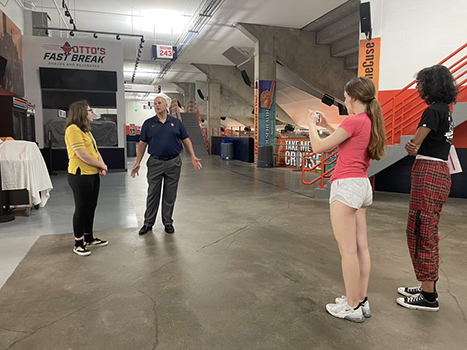

Maya Aurand - July 19th, 2022
She started out her career with a bachelor's and master's degree at the University of Albany. In 1979, she was hired as a Russian language instructor at the NSA during the Cold War. Over time, she held many positions, which includes leading analyst for the Soviet Union, executive assistant to the director of the NSA, and many more. This was until she was employed as SIGNT director, which is the NSA's third highest position in the company.
Baginski was the SIGNT director during the terrorist attacks on September 11th. She made a critical effort in the NSA's response to the attacks. Baginski also helped direct the Extended SIGNT Enterprise to acquire, produce, and disseminate a foriegn SIGNT to government and military customers.
In 2003, she left her position to become the executive assistant director of intelligence at the FBI. Throughout her time there, she lead the first ever intelliegence program at the bureau to help stop terrorist plots. After her retirement, she was asked to stay on as a senior advisor to the FBI, which she accepted.
After retiring from the FBI, Baginski has held multiple positions in private companies. She has been a board member for many organizations, and has been President of National Security System at SPARTA Inc., Chief Executive Officer at National Security Partners LLC, and Chairwoman Emeriti of AFCEA. She has received two Presidential Rank Awards, two Director of Central Intelligence National Achievement Medals, the Director of Military Intelligence's LEadership Award, NSA's Exceptional Civilian Service Award, and the FBI Intelligence Analysts Association Award.
Maya Aurand - July 19th, 2022
Butterflies and machine learning. Can they coexist together? Actually, yes they can. Today, me and my partner Mary Rickman answered that question as we used the source Teachable Machine to answer one simple question: can an AI machine tell different types of butterflies from each other?
With the help of Teachable Machine, we set up a simple test. we uploaded 17 pictures each for three types of butterflies: the monarch, the sonoran, and the purple hairstreak. Then, we told Teachable Machine to train the model. It took a couple of seconds for it to train, but it worked! We now had a model.
Then, it was time to test our model out. We had collected a bunch of sample images to try it out. We had one of each butterfly, then a random butterfly image to see what would happen. The model worked well at identifying the first three images; the only problem was the little hints of colors on the butterflies. But the random butterfly was a mix of all three. It couldn't be classified due to its nature.
In conclusion, I think the AI would be able to work better with more data. Mary and I wished we had more time to work on this. I think that AI has more practical uses as well, like for helping computers find specific organs in the body, or teaching emotions to people with neural problems. I hope that we can work more on this, and maybe this will spiral into a butterfly identifying application someday!
Here is the link for our Teachable Machine if you'd like to test it out: https://teachablemachine.withgoogle.com/models/RkkefEiBC/
Maya Aurand - July 20th, 2022
Today at IT Girls, our supervisor Laurie Ferger gave us a challenge: we were going to hold a scavenger hunt across campus to see how different departments used technology. Me, Gia, and Kate went across campus, interviewing a bunch of different people.

One of the people we interviewed was iSchool Career Services worker Jeff Fouts. He was one of the last people we interviewed on our hunt, and he was quite friendly during the talk. His job? To help students find interships and careers around campus and the city. He gave us some insight into the iSchool scene. Did you know that there are more women at the iSchool, and that they make a greater salary at their jobs than men do?
Fouts uses his online technology and data to help match students with an intership. The data also shows employers whether a student would meet the qualifications for the internship or not. Technology also helps the students get updated on the status of their intership, and if anything changes Throughout their intership.
Fouts has this advice to give to the IT Girls, as well as anyone who is aspiring to go into the iSchool or computing in general: "Times are changing, it's a great time to enter the field. It's great to see how far ahead you girls are."
Special thanks to Jeff Fouts for the interview.
Maya Aurand - July 21st, 2021
Today at IT Girls, we were talking about different websites that involve citizen science. What is citizen science, exactly? It's the collection and analysis of data relating to the natural world by members of the general public, typically as part of a collaborative project with professional scientists. Me and my partners Mary and Christian looked at the website Zooniverse for inspiration.
Our presenatation was on one of the activities in Zooniverse. Some students at King's College in London designed a citizen science project to try and identify patterns in breast cancer (specifically lymph nodes). Volutneers go through a tutorial and are taught to circle the centers and barriers of these lymph nodes. The nodes are created using AI images. Over 2,754 volunteers have participated in the project since it began in November of 2021.
How can citizen science be used in other fields? I think that this is a good resource for history, as they can use volunteers for scanning and translating old, lost documents. Citizen science is also great for keeping watch over endangered species. Another use for it is to look for patterns or irregularities in space. There is a lot of different practical uses. Basically, if there's a problem of there not being enough of something or info about it, citizen science can help.
In conclusion, citizen science is an important aspect of computer science, as well as understanding our world. It can do a lot of help in the world if we keep implementing it in our society.
Maya Aurand - July 22nd, 2022
Cybersecurity is the measures taken to be protected against the criminal or unauthorized use of electronic data. it is also the practice of ensuring confidentiality, integrity, and availabilty of information. Measures are designed to combat threats against networked systems and applications, whether those threats originate from inside or outside an organization. This is also called Information Technology (IT) security.
I think that the future of cybersecurity is bright. However, we should still anticipate for the worst to happen. There will always be new threats emerging, as making more adaptive programs for these will have bugs at first. But I believe that technology will overcome and adapt to these problems. Hopefully the Internet will have a safe and sound future, due to the work of the next generation of cybersecurity engineers.
Maya Aurand - July 25th, 2022
After our weekend off from IT Girls, we came back to discuss bias in the media, as well as in our own selves. We learned about all the different types of bias a person could have, and it surprised me how much unnoticed bias I had. We all have unnoticed bias in ourselves, and I think it's interesting how much we strive to not have bias, when we're hiding so much bias from ourselves.
We played a game called Bias or Bust. It's quite simple: one team must defend a claim, while the other must debunk it. The teams then must find resources (or make their own in some cases) that support their claim. They must present each claim to the person who is deciding on what claim they want, then try to debunk the other teams claims.
This game was quite odd, mostly due to the sources we had to use. Yes, we had to use professional sources for some of our claims. But convincing a six year old the Earth was flat? We had to make our own sources, since six year olds believe almost anything if it's said from someone they trust like their parents. Or, they learn from their idols, like Iron Man. As our clients got older, the more professional our calims had to sound. And as we let along, we saw the bias in our client grow and fester until she was a giant bigot.
In conclusion, we can stop bias with our media. But so much bias is in our daily life, so it might be impossible. Bias isn't bad, but it's preventing us from all being closer to each other. If we understand the types of bias and see it in our lives, we can all try and prevent it.
Maya Aurand - July 26th, 2022
What makes a chart compelling? Well first, you have to tell a story with the chart. Although it has to sell your point, you still have to account for no bias. The chart shouldn't misinform its readers as well. Also, it must have context to tell the story. Let's talk about making a compelling chart while looking at this chart.
This graph shows how much trust we put in the media on dire situations. Each shade of red represents a different crisis. The graph alternates from high to low, with an added constant of no answer. The studies show that most people would most likely put low trust into the media, with the other side with high trust in the media coming in second. Not a lot of people highly trust or distrust the media on topics, or have no answer to this situation.
This graph uses its stacked column format to show all the data, and using the different shades of red seperates each media subject. It also does't fall into bias, by showing a wide range of data for its subjects. Finally, the data is labeled well and gets its point across clearly. The graph conveys how people trust the media during recent situations.
Maya Aurand - July 28th, 2022
Today at IT Girls, we had fun with AI generated content. On the left is my deep dream.After making our deep dreams online, we discussed about bias in AI. Since our society is designed by standards, those AI are designed by those standards as well. How does this affect our usage of the Internet, and how does it reflect on our society?
One of the activities the speaker had us do was look up images of women online. The results of the pictures of the women were quite normal. But the tags were quite shocking, as they only focused on women's bodies (pregnant, curvy, beautiful, etc.). We looked up pictures of men as a contrast, and they didn't have that problem. Why are we as a society so obsessed with women's bodies?
Another example of what we did was go onto Dall-E mini. Dall-E mini is a website that draws examples of promts it is given. We looked up 'Darth Vader on vacation with his family' (yes, we were having fun). The results all showed Darth Vader with a basic nuclear family. The family was also all white and straight. Dall-E notes that it has some form of societal bias, and is working on overcoming it in due time.
Overcoming bias is extremely important in advancing in AI technology. Altohugh we are aways off from a true idealistic AI, having diversity in the workforce can start a reaction to help include more diversity in AI. That way, AI can represent all different backgrounds of life.